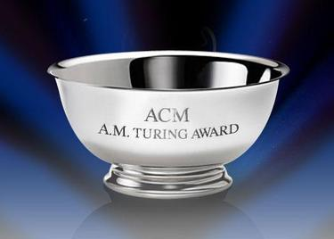

Wat is de Turing Award?
De Turing Award is een soort "Nobelprijs voor de informatica".
De prijs wordt elk jaar uitgerijkt aan de persoon die dat jaar het meest heeft bijgedragen aan de informatica.
De prijs is het eerst gegeven in 1966, 54 jaar geleden.
Sinds toen zijn er al 70 Awards uitgerijkt.
Van 2007 tot 2013 ging de prijs vergezeld met 250.000 dollar.
Nu is dat zelfs 1 miljoen dollar. De prijs zelf ziet eruit als een metalen kom.
